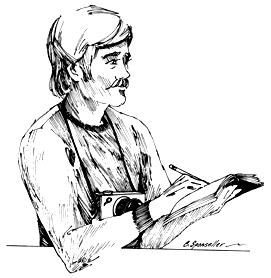

Even if you live in the most out-of-the-way place in America you can make headlines-and good money-by working as a correspondent or "stringer" for a newspaper. Newspapers, large and small, have a crying need for people with a "nose for news" and the ability to relate what's happening in a forthright, interesting manner. This is especially true for areas which receive little or no news coverage at all.
Traditionally, "stringers" have been little old ladies who gossiped across the back fence, found out who visited whom over the weekend and wrote it up for the local Clarion. Each LOL was paid by the column inch for such drivel and she kept track of the amount of her copy that was used by measuring it off with a piece of string in which she tied knots to mark the length of each column. At the end of the month the LOL sent the Clarion editor her ball of twine of received a check in return.
While there are still a few such stringers around, the kind of "social" columns they produce for small weeklies are rapidly being replaced by more new worthy stories and articles. If you can write these "harder" features (especially from an out-of-the-way area), you should be able to sell them to the larger metropolitan dailies. Such newspapers cannot afford to send union reporters to every area the publications serve, and so they rely on free-lance correspondents to gather the news in small communities and rural counties.
Stringer pay isn't great (but it's not bad either for the number of hours usually put into the job) and it's good enough to supplement your income while you're doing different things . . . like farming.
Currently, I'm a stringer for the Honolulu Star-Bulletin, the largest newspaper in the state of Hawaii. I'm responsible for covering the western side of the island of Hawaii . . . a region about half the size of Connecticut. My time is pretty much my own and I average approximately 16 hours a week. For my efforts I'm paid a $75-a-month retainer, 50 cents per column inch for stories published, varying rates for photographs and 10 cents a mile for auto expenses. Generally, this totals out to around $200 a month.
I'm not saying you'll do this well, at least not in the beginning. Then again, on an adjusted basis, you might do even better. Most newspapers on the mainland should pay at least 35 cents a column inch for stringer material. That's less than I earn out here in the islands all right . . . but the cost of living on the mainland (especially in farming regions) is also less too.
If you're in it for the money, it's probably best to work for a large newspaper which can afford to pay you more. Smaller dailies and weeklies do offer other advantages, though. For one thing, they'll probably print more of your copy than their big city cousins.
The news business is hectic and there's a lot of pressure on the folks who gather timely information and prepare it for publication. An editor wants a correspondent he can trust to be dependable and meet every deadline.
Editors also pray constantly for correspondents who know how to write. You don't have to be a Tom Wolfe or Jimmy Breslin to string for a big daily . . . but you do have to be able to express yourself clearly and accurately.
Don't be shy about asking for a job as stringer. The very first newspaper you contact may well have been looking for someone to cover your area for years. Write the editor a letter of application and find out!
Stress, in that letter, any kind of writing you may have done in the past . . . be it for your high school annual, college newspaper or whatever. I once knew a reporter who landed his job covering city hall full-time for a daily newspaper . . . after having spent a short period writing descriptions of women's clothing for the Sears, Roebuck catalogue! If you've ever had anything published anywhere, then, enclose a sample with your letter.
And if you've never had anything published? Write a sample feature story about something or someone in your area (you might do a piece on someone who has an interesting collection of old bottles, for example) and fire it off to the editor you want to impress. Show him you can handle the job.
The only equipment you'll absolutely need to work as a stringer is a typewriter, paper, pen and car. A telephone, although convenient, is not necessary. I don't have one, at any rate, since phone and electrical service have not yet reached up into our area. I use a pay telephone when I'm lucky enough to find one that works.
Once you become a correspondent you should expect to keep right on digging up news and features on your own. Chances are, your editor will also give you regular assignments to cover city council meetings, planning commission actions and all manner of public hearings.
Some of the work will be dull, but most will seem interesting and-at times-even exciting. You'll soon learn that newspaper reporters get a lot of privileges and have access to events and happenings that are often denied to the general public . . . and you'll meet a lot of interesting people.
In the seven years I've been writing for newspapers (mainly in small towns), I've been assigned to interview such personages as Robert F. Kennedy, R. Buckminster Fuller, Prince Saud of Saudi Arabia, Ronald Reagan and a host of movie stars. The most absorbing people of all, however, are the ordinary folks you'll find in every community. Everyone is unique and they all have a story to tell. Write 'em up.
Newspaper writing offers more than the obvious monetary rewards. There's a lot of satisfaction in using your efforts as a stringer to help make the world and your community a better place in which to live.
As the result of stories I've written, for example, a man unjustly imprisoned was released and a community was embarrassed into setting up a school for mentally retarded children. My published work has also helped remove unscrupulous politicians from office and once forced the investigation of a vice squad that broke federal aviation regulations by flying its helicopter too low over private residences.
Newspapers always need good, graphic pictures that tell a story and-in addition to selling his or her writing-a correspondent can also market photographs.
The best camera to use, I've found, is a 35mm single lens reflex. Such a camera is easy to carry, performs well and allows you to shoot a lot of photos fast. Shop around. There's lots of good, used 35's for sale and I bought my highly serviceable East German 35mm camera new in a discount store for only $69. Bargains are available, then, although you definitely should "try before you buy".
Once you become known in your area as a writer, you'll probably find you can pick up additional dollars doing press releases, newsletters, manuals and ghost writing for local manufacturers, businesses, stores and individuals. Any skills you develop in photography can be moonlighted to the same market.
If you have more time than money left over after spading up your homestead garden . . . lay down that shovel, pick up paper and pen and go out digging for news. The dollars you'll earn can buy a lot of seed.
|
 |
|
|